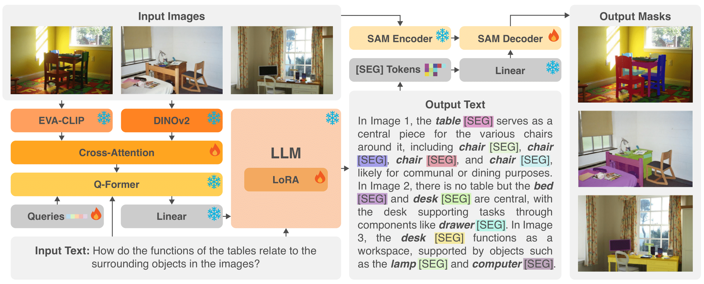
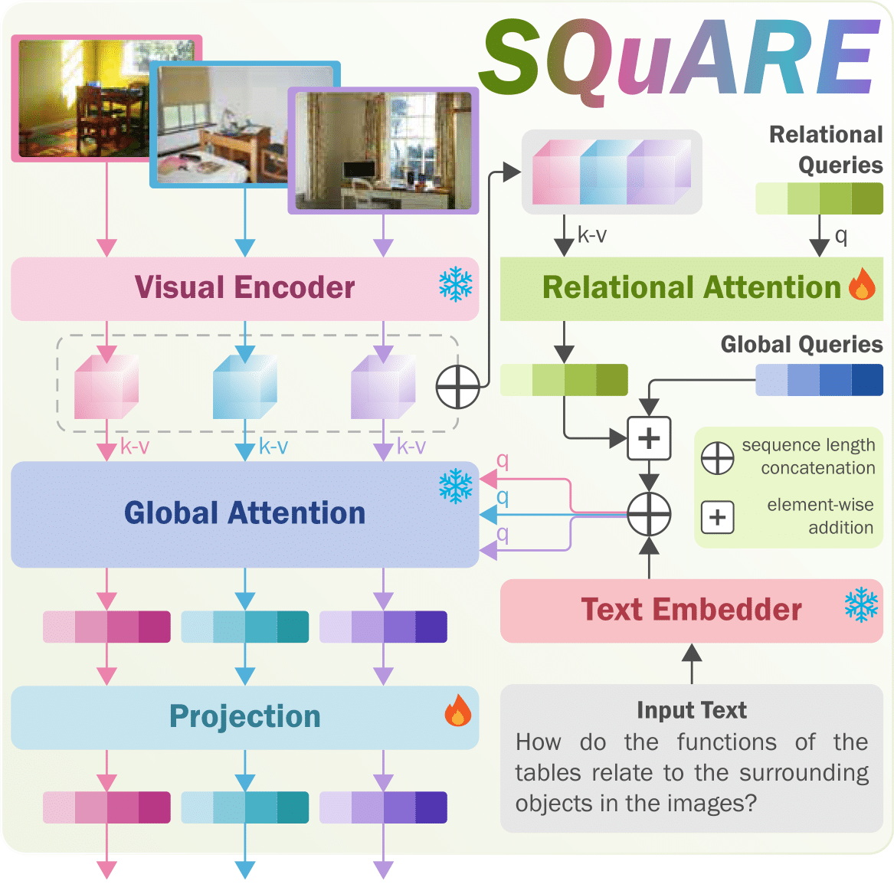
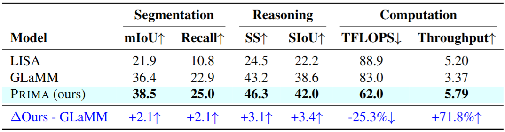
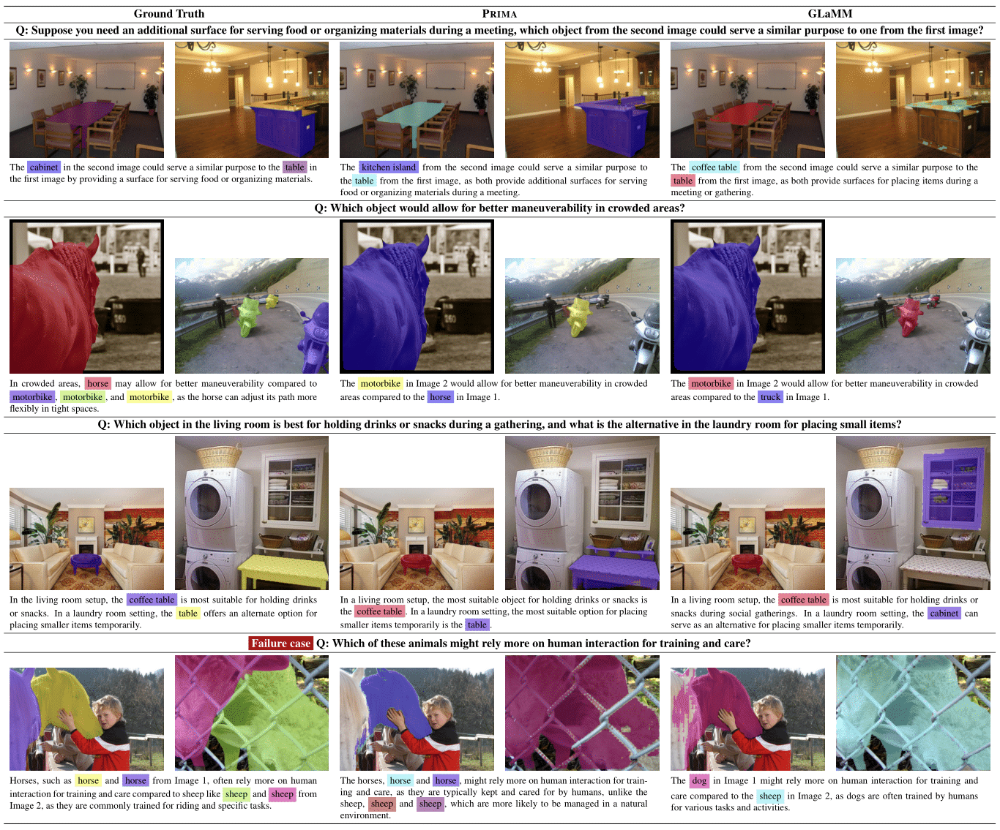

PRIMA: Multi-Image Vision-Language Models for Reasoning Segmentation
📝 Abstract
Despite significant advancements in Large Vision-Language Models (LVLMs)' capabilities, existing pixel-grounding models operate in single-image settings, limiting their ability to perform detailed, fine-grained comparisons across multiple images. Conversely, current multi-image understanding models lack pixel-level grounding. Our work addresses this gap by introducing the task of multi-image pixel-grounded reasoning segmentation alongside PRIMA an LVLM that integrates pixel-level grounding with robust multi-image reasoning to produce contextually rich, pixel-grounded explanations. Central to PRIMA is SQuARE a vision module that injects cross-image relational context into compact query-based visual tokens before fusing them with the language backbone. To support training and evaluation, we curate M4Seg a new multi-image reasoning segmentation benchmark consisting of ~744K question-answer pairs that require fine-grained visual understanding across multiple images. PRIMA outperforms state-of-the-art baselines with 7.83% and 11.25% improvements in Recall and S-IoU, respectively. Ablation studies further demonstrate the effectiveness of the proposed SQuARE module in capturing cross-image relationships.
💡 Contributions
- Novel Task. We propose the novel task of multi-image pixel-grounded reasoning segmentation which requires fine-grained comparison and contextual understanding across multiple images at pixel level and natural language reasoning.
- New Benchmark. We curate M4Seg a new challenging benchmark with ~744K multi-image QA pairs, annotated with multiple object and part segmentation masks to train and evaluate multi-image pixel-grounding models.
- New Multi-Image Pixel-Grounded LVLM. We propose PRIMA an LVLM designed to perform instruction-guided cross-image alignment of relevant visual features via a novel SQuARE module, enabling reasoning with contextually grounded segmentation masks across multiple images. Experiments demonstrate PRIMA's impressive performance compared to strong baselines across segmentation (+↑8.11% mIoU and +↑7.83% Recall) and text-based metrics (+↑6.45% Semantic Similarity and +↑11.25% S-IoU).
PRIMA Architecture

Overview of the proposed PRIMA architecture. Leveraging a LoRA-finetuned language model, a novel SQUARE vision encoder, and a SAM-based decoder, PRIMA dynamically generates segmentation masks corresponding to objects referenced in natural language queries, supporting pixel-grounded reasoning in complex multi-image tasks.
SQuARE module

Our proposed SQuARE module. Learnable relational queries attend over the concatenated multi-image features to form a shared relational representation. This representation is injected into the query pathway for global feature extraction, producing enriched visual representations that capture cross-image interactions.
📊 Quantitative Results

Experimental Results on M4Seg. PRIMA significantly outperforms both general-purpose and pixel-grounding LVLM baselines. The general-purpose LVLMs struggle with this task, a limitation we attribute to their lack of task-specific training and cascading errors from using SAM on the text-based grounding information. While Gemini-2.5 Pro is the top performer in this category, its performance remains limited with 30.21% mIoU and 68.51% SS. The reasoning segmentation baselines perform better, as they leverage pixel grounding capabilities and are finetuned on M4Seg. GLaMM, for instance, outperforms the general-purpose LVLMs with 38.12% mIoU and 74.05% SS. Compared to all baselines, PRIMA sets a new benchmark, surpassing the next best baseline by 8.11% and 12.33% in terms of mIoU and I-SS, respectively. PRIMA also achieves a gain of up to 6.45% and 11.25% on the text metrics SS and SIoU.
🔎 Qualitative Examples

🔎 PRIMA in the Wild

BibTeX
@article{wahed2024prima,
title={PRIMA: Multi-Image Vision-Language Models for Reasoning Segmentation},
author={Wahed, Muntasir and Nguyen, Kiet A and Juvekar, Adheesh Sunil and Li, Xinzhuo and Zhou, Xiaona and Shah, Vedant and Yu, Tianjiao and Yanardag, Pinar and Lourentzou, Ismini},
journal={arXiv preprint arXiv:2412.15209},
year={2024}
}